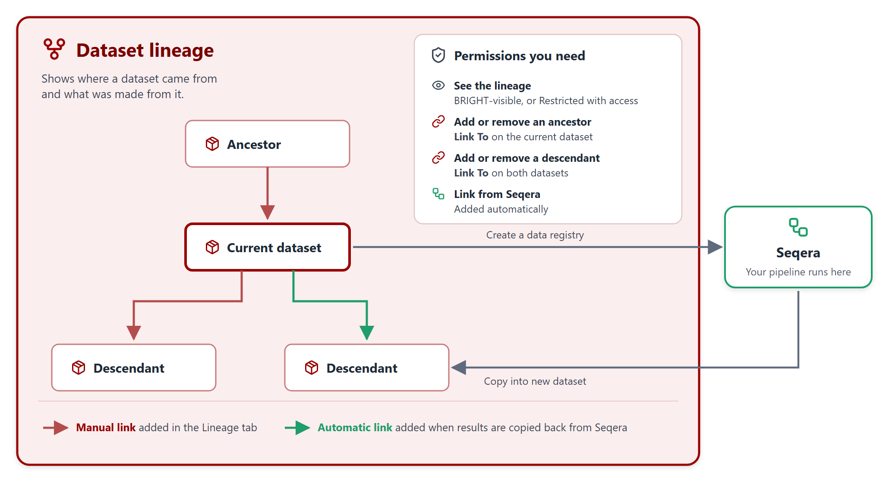

Dataset Lineage¶
Once you have created a dataset you can define its Lineage by linking it to one or more datasets.
➣ Lineage creates a relationship that shows how datasets are related across different stages (e.g., raw → processed → results).
➣ It ensures data provenance by identifying source datasets when creating new ones (e.g., pipelines), supporting reproducibility.
➣ When you copy results back from Seqera, the new dataset is linked automatically (see Seqera (WIP)).
Before you start, here is an overview of how lineage works:


Dataset Lineage overview¶
Important
To create (or remove) a Dataset Lineage between datasets you must have the permission Link To on the destination dataset. The destination dataset is always the descendant.
You also need Link To on the dataset you are viewing, otherwise the Lineage buttons are greyed out.
Add a Lineage¶
Click the
Lineagetab on the dataset home pageChoose the relationship type:
Add Ancestor, if the selected dataset creates the current datasetor
Add Descendant, if the selected dataset is a result of the current dataset
Select the dataset from the list
Add a description explaining the relationship (optional)
Click the
Link as Ancestor(orLink as Descendant) button to complete the process
To remove a Lineage:
Click
Remove link from datasetSelect the link and click
Delete
Dataset Lineage
API Availability¶
The actions described in this page can also be performed programmatically. For more details, see the following endpoint in the API Reference: